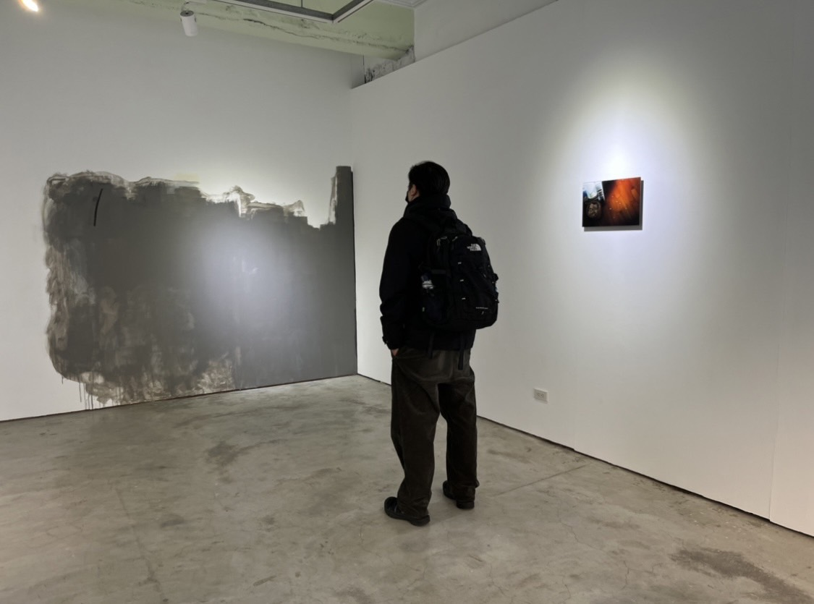
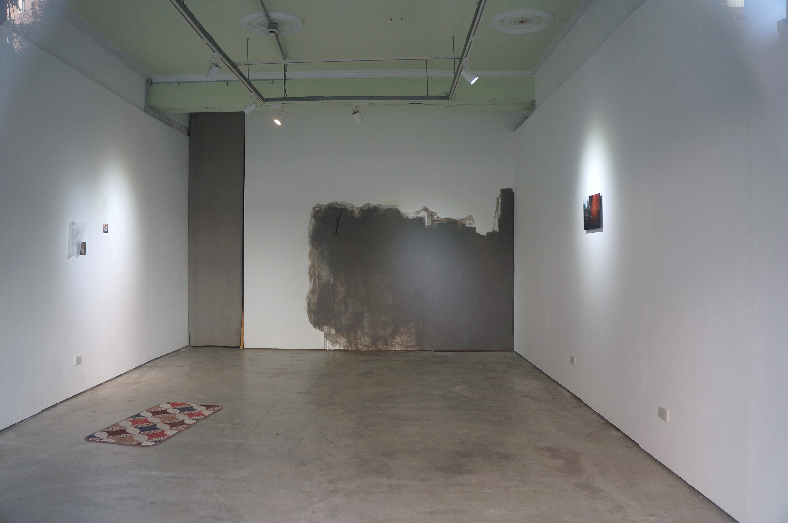
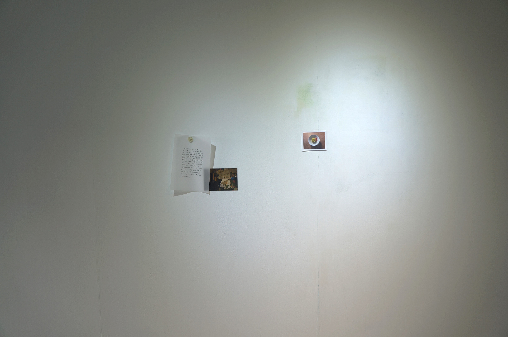
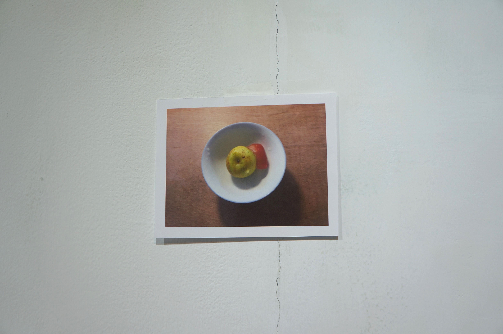
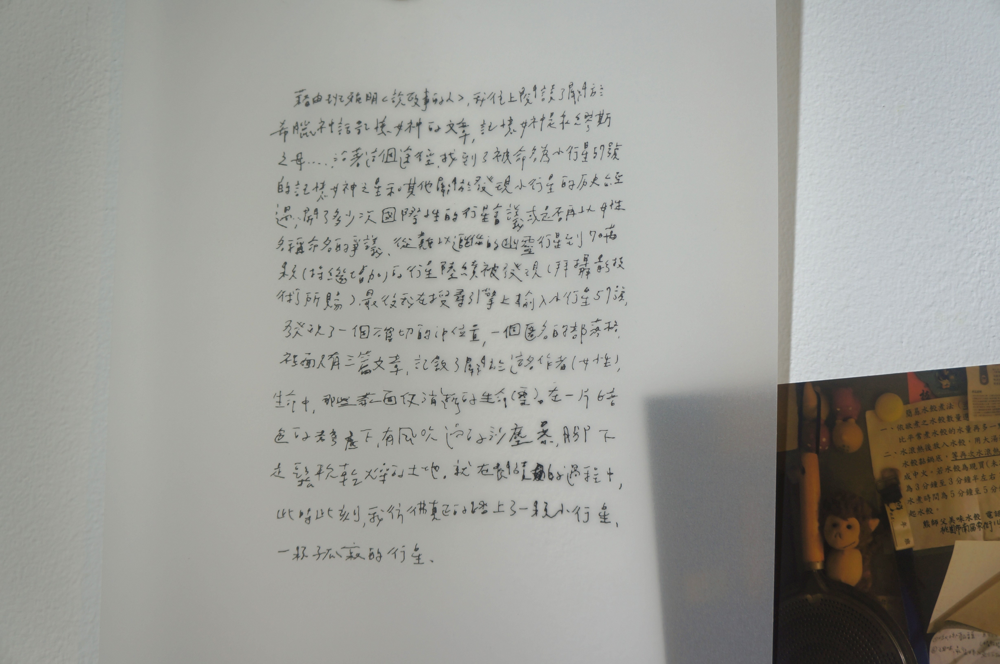
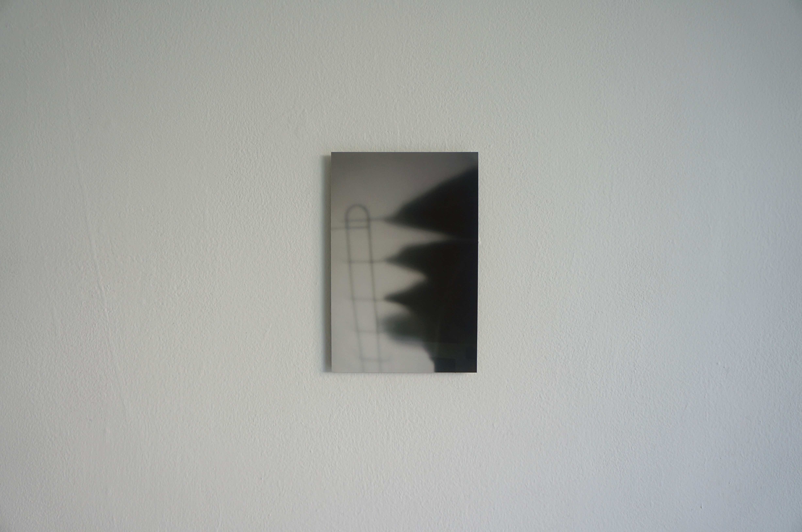

小行星57號
此次展覽源自於兩年間散落在生活中的偶遇，像某一天忽然下起了傾盆大雨，外面的世界彷彿暫停，開著窗、風和雨的味道、有點漏水的房間，似乎不用到很遠的地方，家也可以是異地。
At times, a sudden downpour would bring the outside world to a pause. With the window open, the smell of wind and rain, and a slightly leaking room, it felt as though one did not need to travel far—home itself could become a distant place.
展覽由幾張在家拍攝的影像和家中的物件、大片灰色的塗抹油漆和一篇短文組成。短文記述著我從閱讀班雅明《說故事的人》延伸至關於記憶的神話與小行星的搜尋、發現與命名經過，最終停留在一個匿名的部落格之中。沿著某些偶然出現的線索，經驗被帶往何處？關於星辰與生命的紀錄，並非指向一種確定的保存，面對生命無法言說的感觸，更像是一種含著疼痛持續接近的過程。
那些看似遙遠的存在，與日常中細微的感知，在不同的尺度之間彼此映照，在不被察覺的時刻相遇。
此展覽最初於2022年以《願你腦袋空空》為名呈現。





